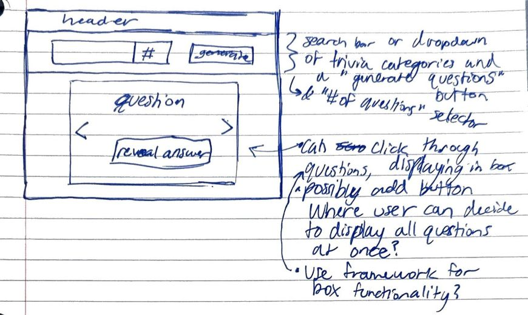
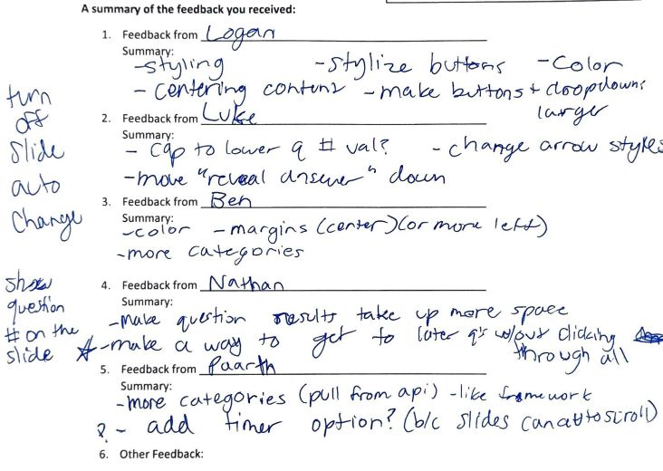

Site Proposal
Planning to create a basic trivia site where a user can generate trivia questions within a selected category. Audience is wider due to the range of categories in the API, but basically is just people who are looking to get trivia question and answers. After the user gets the question results and they have been displayed on the page, they will be able to click on a box to reveal the answer to each question.
Planning to use the Open Trivia DB API.
Sketch(es)
Sketch of Proposed Site

Prototype
Link to prototypeFeedback on Prototype

Finished Page
Link to finished pageSite Features
- The user can select a category and number of questions to generate in separate dropdowns, and then click a "generate" button to call data from the API which is then added to the DOM.
- By clicking a button, the user can swap between displaying the questoins within a Bootstrap Carousel and displaying all of the questions displayed down the page. The text on the button changes depending on how the questions are currently displayed. Radio button selections, answer check states, and answer reveal states persist when the questions are swapped between display types.
- The user can navigate the carousel either through side scrolling or by using the "next" and "previous" buttons in the bottom corner of the carousel.
-
After questions are generated, the question number, question, a list of possible answers, and
a "Check Answers!" button are displayed. A "Reveal Answer" button is also displayed, but is
disabled.
The user can select an answer from the possible answers using the radio buttons. When they then click the "Check Answers" button, a textbox is shown between the options and the button telling the user whether they were correct. The radio buttons and the "Check Answer" button are then disabled, and the "Reveal Answer" button is enabled. If the user clicks "Check Answer" without selecting anything, nothing happens.
After the "Reveal Answer" button is enable, the user can then click it to reveal a text box containing the correct answer to the question. The "Reveal Answer" button is then disabled. - When the user clicks the "Generate" button, the selected category and number of questions are storage to the browser local storage. These stored values are then loaded in the next time the user loads the site to set the category and number of questions select elements equal to the stored values;
Resources Used
-
Sites used for DOM information
- GIF Finder homework referenced/copied to figure out how to request and format data from the API
-
Referenced to hide/show certain elements within the DOM without removing their
space from the flow.
(In some other cases display: none was used to hide elements, but this property/value removes the item entirely from the flow, and so the page can jump around and bit when the value is set back to be visible). - Referenced to learn how to move entire div of questions between display locations in the DOM.
- Documentation referenced for Bootstrap Carousel (v6.0)
- Open Trivia Database API Documentation
Meeting Requirements
-
API
Data from the API is retrieved based on the user's chosen category and number of questions. The data is then used to display the given question and possible answers. It is also used to check whether the user's selected answer is correct and to display the correct answer. -
Local Storage
The player's selected category and number of questions selection is stored in local storage when the "Generate" button is clicked. This data is loaded into the select elements when the page is loaded again. -
Controls
The page includes more than three controls which change the DOM (and are not just "Search" buttons). The main ones are the category selector, number of questions selector, and the button to change how the questions display. However, the "Check Answer" and "Reveal Answer" buttons also change the DOM around them within their specific question. -
Error Free
No errors are thrown as the page runs. The only possible error to show up in console is a 429 status return from the API because the API rate-limits the user to one request every 5 seconds. This is handled by displaying a state update to the user of "An error occurred while loading questions. Please wait a few seconds and try again." The player is then able to click then "Generate" button again and get new questions once the rate-limit has passed. -
Suggested Grade: A-
I included more controls than required, and worked with a CSS Framework (Bootstrap) to format the questions in a carousel. However, the style/design is pretty simple. It does use CSS grid formatting in some areas (header, footer, and for each question), but it doesn't use any images or graphics. Instead it just styles with different colors, sizings, and some borders.